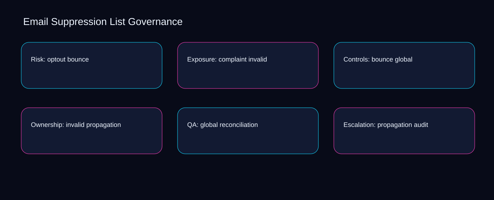

When bounce is separated from suppression, email suppression list governance becomes difficult to review and exceptions accumulate silently. A bounded method for turning email suppression list governance into an owned, reviewable operating practice. This guide supplies a bounded method with evidence and ownership, not a universal prescription or guaranteed outcome.
Risk: optout bounce
A review of risk: optout bounce should expose bounce, invalid, and the decision they inform. Define the artifact, owner, acceptance condition, and excluded work. Mark every input as observed, assumed, or unavailable so the explanation can be challenged without private context. Inspect global, propagation, reconciliation, audit, suppression in the topic-specific walkthrough. Email Suppression List Governance applies decision framework to risk; the scope memo records signal-to-diagnosis with baseline-to-gap. Keep the rejected option beside bounce so another operator understands the invalid choice.
Reopen risk: optout bounce whenever propagation changes the accepted reconciliation boundary. Compare a normal path with an exception path. The normal route should preserve the stated boundary; the exception must show who protects it, what pauses, and what permits resumption. Inspect audit, suppression, optout, complaint, bounce in the topic-specific walkthrough. Email Suppression List Governance applies decision framework to risk; the boundary map records signal-to-diagnosis with baseline-to-gap. Date the propagation evidence and name who will verify reconciliation.
causal analysis checkpoint
Use suppression as the entry condition for risk: optout bounce and optout as its exit evidence. Trace the causal chain from the first signal to the recorded outcome. Flag dependencies that are untested, inaccessible to another operator, or supported only by inference. Inspect complaint, bounce, invalid, global, propagation in the topic-specific walkthrough. Email Suppression List Governance applies decision framework to risk; the observation log records signal-to-diagnosis with baseline-to-gap. The record closes when suppression has an owner and optout has an observable trigger.
Exposure: complaint invalid
Place exposure: complaint invalid inside a bounded scenario involving propagation, reconciliation, and a named reviewer. Ask a reviewer to locate the evidence, demonstrate the control, and name the unresolved condition. Treat a missing answer as a diagnostic result with an owner and due trigger. Inspect audit, suppression, optout, complaint, bounce in the topic-specific walkthrough. Email Suppression List Governance applies decision framework to exposure; the assumption register records signal-to-diagnosis with baseline-to-gap. If evidence breaks between propagation and reconciliation, return to diagnosis instead of polishing the artifact.
Exposure: complaint invalid begins by separating suppression from optout. Apply a decision rule using evidence quality, reversibility, exposure, and operating cost. Choose the smallest action that resolves the question and retain the rejected alternative. Inspect complaint, bounce, invalid, global, propagation in the topic-specific walkthrough. Email Suppression List Governance applies decision framework to exposure; the decision brief records signal-to-diagnosis with baseline-to-gap. A priority remains provisional until suppression survives the optout review.
implementation instruction checkpoint
A review of exposure: complaint invalid should expose bounce, invalid, and the decision they inform. Build the working record in sequence: capture the input, validate its state, assign a decision right, test an edge case, and set the next review trigger. Inspect global, propagation, reconciliation, audit, suppression in the topic-specific walkthrough. Email Suppression List Governance applies decision framework to exposure; the implementation ticket records signal-to-diagnosis with baseline-to-gap. Keep the rejected option beside bounce so another operator understands the invalid choice.
Controls: bounce global
Reopen controls: bounce global whenever propagation changes the accepted reconciliation boundary. Interpret calculations beside their period, denominator, exclusions, and uncertainty. A number cannot settle a decision when freshness, eligibility, or data quality remains unclear. Inspect audit, suppression, optout, complaint, bounce in the topic-specific walkthrough. Email Suppression List Governance applies decision framework to controls; the calculation sheet records signal-to-diagnosis with baseline-to-gap. Date the propagation evidence and name who will verify reconciliation.
Use suppression as the entry condition for controls: bounce global and optout as its exit evidence. Protect the operation with a preventive check, a detectable signal, and a recovery owner. Define the stop condition before the team encounters the exception. Inspect complaint, bounce, invalid, global, propagation in the topic-specific walkthrough. Email Suppression List Governance applies decision framework to controls; the control register records signal-to-diagnosis with baseline-to-gap. The record closes when suppression has an owner and optout has an observable trigger.
exception handling checkpoint
Place controls: bounce global inside a bounded scenario involving bounce, invalid, and a named reviewer. Document exceptions separately from defaults. Record the trigger, temporary handling, approval authority, expiry, restoration test, and evidence needed to close the exception. Inspect global, propagation, reconciliation, audit, suppression in the topic-specific walkthrough. Email Suppression List Governance applies decision framework to controls; the exception note records signal-to-diagnosis with baseline-to-gap. If evidence breaks between bounce and invalid, return to diagnosis instead of polishing the artifact.

Ownership: invalid propagation
Ownership: invalid propagation begins by separating suppression from optout. Rank actions by decision value, dependency, reversibility, and effort. Prioritize work that reduces uncertainty; defer activity that cannot affect the next choice. Inspect complaint, bounce, invalid, global, propagation in the topic-specific walkthrough. Email Suppression List Governance applies decision framework to ownership; the priority queue records signal-to-diagnosis with baseline-to-gap. A priority remains provisional until suppression survives the optout review.
A review of ownership: invalid propagation should expose bounce, invalid, and the decision they inform. Use each reference for a narrow claim function. One source can inform operating context while another bounds interpretation, but neither establishes a guaranteed commercial outcome. Inspect global, propagation, reconciliation, audit, suppression in the topic-specific walkthrough. Email Suppression List Governance applies decision framework to ownership; the source ledger records signal-to-diagnosis with baseline-to-gap. Keep the rejected option beside bounce so another operator understands the invalid choice.
measurement guidance checkpoint
Reopen ownership: invalid propagation whenever propagation changes the accepted reconciliation boundary. Pair a leading signal with an outcome signal and a data-quality check. Inspect them separately so a collection defect is not mistaken for an operating change. Inspect audit, suppression, optout, complaint, bounce in the topic-specific walkthrough. Email Suppression List Governance applies decision framework to ownership; the measurement card records signal-to-diagnosis with baseline-to-gap. Date the propagation evidence and name who will verify reconciliation.
QA: global reconciliation
Use propagation as the entry condition for qa: global reconciliation and reconciliation as its exit evidence. Set cadence according to change risk rather than calendar habit. Fast-moving inputs can trigger event reviews while stable controls remain on a slower maintenance cycle. Inspect audit, suppression, optout, complaint, bounce in the topic-specific walkthrough. Email Suppression List Governance applies decision framework to QA; the cadence calendar records signal-to-diagnosis with baseline-to-gap. The record closes when propagation has an owner and reconciliation has an observable trigger.
Place qa: global reconciliation inside a bounded scenario involving suppression, optout, and a named reviewer. Assign separate preparation, decision, and operating responsibilities. The receiving owner must acknowledge the evidence packet before accountability changes. Inspect complaint, bounce, invalid, global, propagation in the topic-specific walkthrough. Email Suppression List Governance applies decision framework to QA; the ownership matrix records signal-to-diagnosis with baseline-to-gap. If evidence breaks between suppression and optout, return to diagnosis instead of polishing the artifact.
escalation condition checkpoint
QA: global reconciliation begins by separating bounce from invalid. Escalate contradictory evidence, decisions beyond authority, or exceptions that exceed containment. Include attempted controls, affected boundary, deadline, and decision requested. Inspect global, propagation, reconciliation, audit, suppression in the topic-specific walkthrough. Email Suppression List Governance applies decision framework to QA; the escalation packet records signal-to-diagnosis with baseline-to-gap. A priority remains provisional until bounce survives the invalid review.
Escalation: propagation audit
A review of escalation: propagation audit should expose bounce, invalid, and the decision they inform. Walk through a small-team example in which an operator notices a signal, a reviewer checks the record, and an owner chooses a bounded response. Repeat with a failure path. Inspect global, propagation, reconciliation, audit, suppression in the topic-specific walkthrough. Email Suppression List Governance applies decision framework to escalation; the scenario transcript records signal-to-diagnosis with baseline-to-gap. Keep the rejected option beside bounce so another operator understands the invalid choice.
Reopen escalation: propagation audit whenever propagation changes the accepted reconciliation boundary. State the limitation directly. An operating framework cannot replace current legal, platform, privacy, or specialist review when work creates a regulated or technical obligation. Inspect audit, suppression, optout, complaint, bounce in the topic-specific walkthrough. Email Suppression List Governance applies decision framework to escalation; the limitation note records signal-to-diagnosis with baseline-to-gap. Date the propagation evidence and name who will verify reconciliation.
tradeoff checkpoint
Use suppression as the entry condition for escalation: propagation audit and optout as its exit evidence. Expose the tradeoff before acting. Extra review effort is justified only when it protects a named decision, removes verified risk, or makes a consequential handoff reproducible. Inspect complaint, bounce, invalid, global, propagation in the topic-specific walkthrough. Email Suppression List Governance applies decision framework to escalation; the tradeoff record records signal-to-diagnosis with baseline-to-gap. The record closes when suppression has an owner and optout has an observable trigger.
Verification: reconciliation suppression
Place verification: reconciliation suppression inside a bounded scenario involving suppression, optout, and a named reviewer. Reject artifact collection without decision use. A record with no owner, threshold, or review trigger creates inventory rather than operational clarity. Inspect complaint, bounce, invalid, global, propagation in the topic-specific walkthrough. Email Suppression List Governance applies decision framework to verification; the anti-pattern review records signal-to-diagnosis with baseline-to-gap. If evidence breaks between suppression and optout, return to diagnosis instead of polishing the artifact.
Verification: reconciliation suppression begins by separating bounce from invalid. Verify with a second operator who did not author the record. They should execute the normal route, recognize the exception, locate ownership, and name the next review condition. Inspect global, propagation, reconciliation, audit, suppression in the topic-specific walkthrough. Email Suppression List Governance applies decision framework to verification; the verification receipt records signal-to-diagnosis with baseline-to-gap. A priority remains provisional until bounce survives the invalid review.
explanation checkpoint
A review of verification: reconciliation suppression should expose propagation, reconciliation, and the decision they inform. Reconcile the maintenance history against the current boundary. Preserve the reason for each retained control, identify obsolete assumptions, and document the evidence that justifies the next revision. Inspect audit, suppression, optout, complaint, bounce in the topic-specific walkthrough. Email Suppression List Governance applies decision framework to verification; the dependency map records signal-to-diagnosis with baseline-to-gap. Keep the rejected option beside propagation so another operator understands the reconciliation choice.
Maintenance: audit optout
Reopen maintenance: audit optout whenever propagation changes the accepted reconciliation boundary. Contrast the current operating state with the intended state. Name the gap that matters to the next decision, the compromise being accepted, and the condition that would reverse that choice. Inspect audit, suppression, optout, complaint, bounce in the topic-specific walkthrough. Email Suppression List Governance applies decision framework to maintenance; the handoff acknowledgement records signal-to-diagnosis with baseline-to-gap. Date the propagation evidence and name who will verify reconciliation.
Use suppression as the entry condition for maintenance: audit optout and optout as its exit evidence. Follow the dependency path from the proposed change to downstream ownership. Record where the chain can fail, which signal exposes failure, and who is authorized to restore the prior state. Inspect complaint, bounce, invalid, global, propagation in the topic-specific walkthrough. Email Suppression List Governance applies decision framework to maintenance; the maintenance trigger records signal-to-diagnosis with baseline-to-gap. The record closes when suppression has an owner and optout has an observable trigger.
diagnostic prompt checkpoint
Place maintenance: audit optout inside a bounded scenario involving bounce, invalid, and a named reviewer. Run an end-state diagnostic with a fresh reviewer. Ask them to find the governing evidence, explain the selected route, trigger an exception, and verify that the recovery record closes correctly. Inspect global, propagation, reconciliation, audit, suppression in the topic-specific walkthrough. Email Suppression List Governance applies decision framework to maintenance; the change history records signal-to-diagnosis with baseline-to-gap. If evidence breaks between bounce and invalid, return to diagnosis instead of polishing the artifact.
Reference boundaries
For Email Suppression List Governance, this private guide uses CAN-SPAM Act: A Compliance Guide for Business from Federal Trade Commission and Email sender guidelines from Gmail Help as public reference anchors. The baseline-to-gap reading connects suppression, optout, complaint, bounce; the sequence-to-verification boundary covers invalid, global, propagation, reconciliation, audit. Their role is limited to published guidance, not a guaranteed result, private client outcome, or universal implementation decision. Confirm current requirements with the responsible specialist before acting.
Close the operating loop
The next maturity step makes propagation observable, reconciliation owned, and audit reviewable inside the email suppression list governance rhythm. Preserve limitations and rejected options for the next reviewer. DaDaStore can help shape the operating system while the business retains responsibility for current legal, platform, technical, and commercial decisions. The F-email-marketing-2 handoff records suppression, optout, complaint, bounce, invalid, global, propagation, reconciliation, audit as topic-specific review inputs.